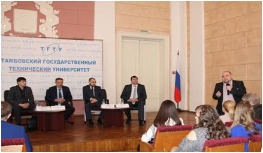
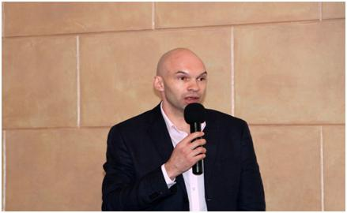

На пути к Startup-2017
24 марта 2017 года представители АО МК «Фонд содействия кредитованию малого и среднего предпринимательства Тамбовской области» (далее - Фонд) приняли участие в открытие акселерационной программы «На пути к Startup-2017» на базе ФГБОУ ВО «Тамбовский государственный технический университет». В рамках данной программы участники смогут пройти обучение у успешных предпринимателей и сотрудников известных компаний Тамбовской области, посетить мастер-классы, получить навыки работы над проектом, наладить контакты с деловыми партнерами.
В своем приветственном слове заместитель генерального директора Фонда Артур Николаевич Шепелёв рассказал о тех мерах финансовой поддержки, которые Фонд может оказать участникам программы «На пути к Startup-2017». Особое внимание было акцентированно на реализуемой Фондом программе микрофинансирования субъектов малого и среднего предпринимательства и таком ее продукте, как микрозайм «Старт», который специально разработан для молодёжи и направлен на реализацию бизнес-проектов.
Андрей Игоревич Евсейчев рассказал, что в марте 2017 года на базе Фонда было создано структурное подразделение – Центр поддержки молодёжных инициатив (далее – Центр), который он возглавил. Данный Центр создан в целях популяризации предпринимательской деятельности и бизнес-образования молодёжи.
По окончанию мероприятия, всех присутствующих призвали к сотрудничеству, в целях обеспечения развития молодежного предпринимательства, как основы малого и среднего предпринимательства в будущем.

